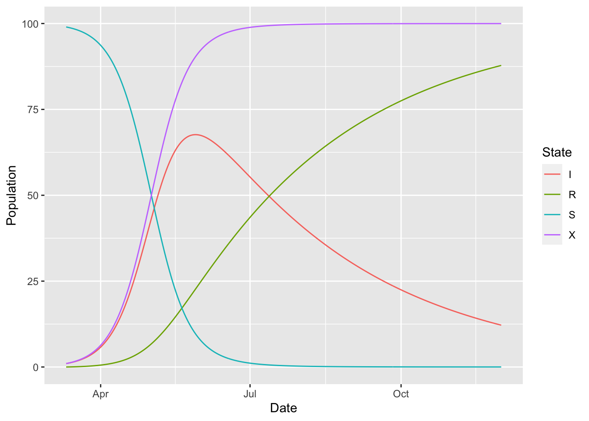

Chapter 12 Outflows
In compartmental modelling we typically want to balance each flow out of a boxes with an equal flow into another box. This is because individuals are simply changing their epidemiological status as they move between boxes, and the total number of individuals across the boxes remains constant.
McMasterPandemic assumes this standard balance between inflows and outflows by default. This default makes it very easy to enforce inflow-outflow balance. This ease of use contrasts with the standard practice of writing down difference or differential equations to define the model (e.g. POMP, STAN). This equation-style interface requires that the user make sure each inflow term in one equation is appropriately balanced by an outflow term in another equation. In McMasterPandemic you define the inflows, and by default it automatically creates balancing outflows.
12.1 Accumulators
It is sometimes necessary to override this default inflow-outflow balance. One use-case that requires something other than the default is in the definition of an accumulator compartment, which allows one to track the cumulative number of individuals that have ever entered a particular compartment or set of compartments.
For example, suppose that we want to keep track of the total number of individuals who have ever been infected in our SIR model. To do this we define an X accumulator compartment. This X box has the same inflow from S as does I, but we restrict outflow from S as individuals flow in to X – otherwise we would double-count the draining of S. We specify this custom outflow model with the add_outflow function.
sir_with_accumulator = (init_model(
params = c(beta = 0.1, gamma = 0.01, N = 100),
state = c(S = 99, I = 1, R = 0, X = 1),
start_date = "2020-03-11",
end_date = "2020-12-01"
)
%>% add_rate("S", "I", ~ (I) * (beta) * (1/N))
%>% add_rate("S", "X", ~ (I) * (beta) * (1/N))
%>% add_rate("I", "R", ~ (gamma))
%>% add_outflow(from = "S|I", to = "I|R")
)## Warning in init_model(params = c(beta = 0.1, gamma = 0.01, N = 100), state = c(S = 99, :
## init_model is deprecated.
## please use flexmodel.
## the only difference between the two functions is the name.The add_outflow function here takes two regular expressions, from and to. The first from regular expression matches states that individuals must flow out of, only if the flow is to states matched by the second to regular expression.
(sir_with_accumulator
%>% simulation_history
%>% select(-S_to_I, -S_to_X)
%>% pivot_longer(-Date, names_to = "State", values_to = "Population")
%>% ggplot()
+ geom_line(aes(Date, Population, colour = State))
)
Note how sometime in July almost everyone has been infected at some point in the epidemic.